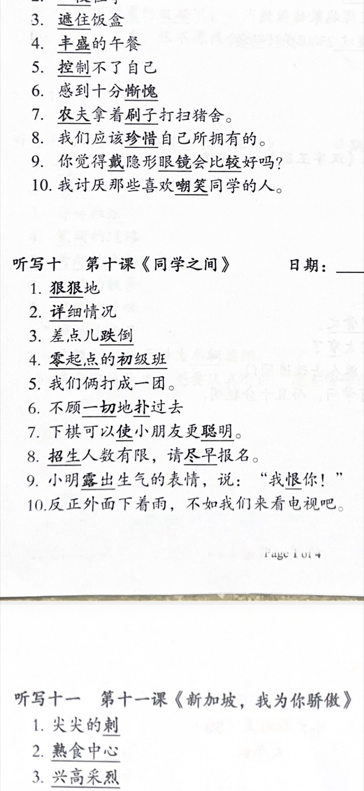

FOR DAD (no Chinese needed to run this):
Open this page full-screen. Point to ??? (the middle block — Lesson 10 ??????).
Koen covers the page, then writes the underlined words/phrases from memory (or you cover and he writes).
Take a photo and send Mum if you want a quick check. Do not stress about perfect marking yourself.
How to run (~10 min)
- Show him the worksheet image below for 2 minutes to revise.
- Cover the screen (or scroll away).
- He writes items 1–10 of ??? in his book.
- Uncover and he self-checks against the photo (finger point each underlined bit).
- Optional: WhatsApp Mum a photo of his writing.
Focus block is ??? · ?????????. The lists above/below (??? / ????) are only if he finishes early.
Worksheet photo

? Timetable · Dad pack home